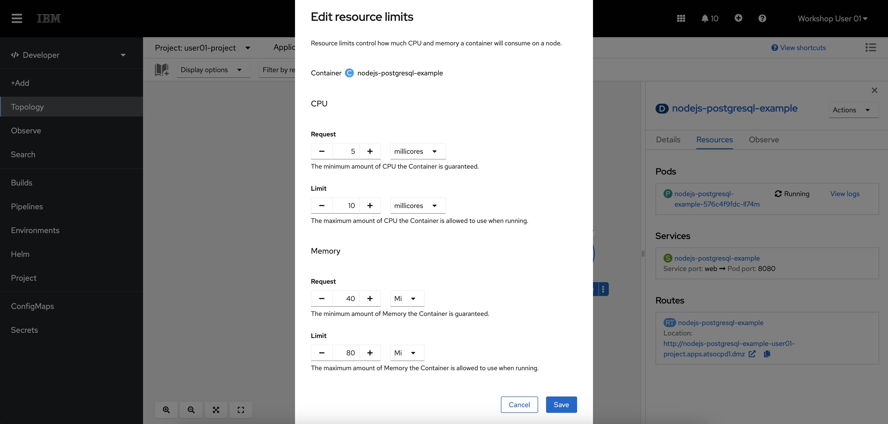
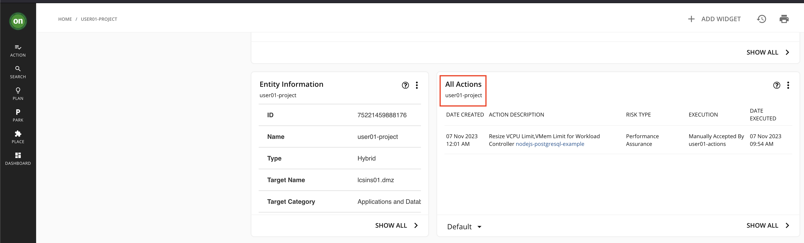

AIOps with IBM Z and LinuxONE Hands-on Workshop¶
Agenda¶
| Activity | Duration |
|---|---|
| Presentation | ~ 1 hour |
| Demonstration - AIOps with z/OS | ~ 15 minutes |
| Hands-on, self-paced lab | Remainder of workshop |
Presentation¶
Labs¶
It is recommended that you complete the Instana lab first then move on to the Turbonomic and/or IBM Cloud Pak for AIOps labs.
Each lab can be completed independently from one another, but some context will be lost if you do not complete the Instana lab first.
A word about the labs
There are often minor changes to the appearance of the user interface for the products used in the labs- e.g., changes in an icon's appearance or color, or minor changes in text on a button, etc. As a result, some screen snippets shown in the labs may differ slightly from what you encounter during the labs. These differences should not affect the functionality of the labs, but please don't hesitate to ask for an instructor's help if any confusion arises due to the difference between the lab instructions and your lab experience.
Workshop Environment Architecture¶
Please visit this page to see the architecture of the workshop's lab environment.
Workshop Owners¶
Workshop Owner Emeritus¶
We hereby publicly acknowledge our gratitude to Matt Mondics, the original author of this workshop.
Accessing the Environment¶
The virtual machines seem to work best in a Firefox browser on your local workstation. Running the VMs in Chrome will sometimes result in an issue where your mouse pointer is not visible.
Accessing your Virtual Machine¶
- Go here: here
- Log in with your IBM ID.
- If you don't already have an IBM ID, you will need to create one here
- When prompted, enter the workshop password provided by your instructor. For security reasons, this password is not listed here.
- If prompted, log into the Windows virtual machine with password:
IBMDem0s(that's a zero). You may already be logged in when first accessing the VM.
Links to platforms¶
Tip
These URLs are given within each lab section at the appropriate place. They are repeated here for your convenience, in case you accidentally close your browser tab or window and lose your session- you can use the links here to easily resume your interrupted session.
- OpenShift Cluster URL: https://console-openshift-console.apps.atsocpd1.dmz/dashboards
- Instana URL: https://unit0-wsc.lcsins01.dmz
- Turbonomic URL: https://nginx-turbonomic.apps.x2pn.dmz/app/
- IBM Cloud Pak for AIOps URL: https://cpd-cp4aiops.apps.x2pn.dmz/zen/#/homepage
If you cannot access the webpage for any of the platforms above, check that the Cisco Secure Client VPN is logged in on the Virtual Machine. If it is no longer logged in, please let the lab administrator know.
Please do not log off or reboot the Virtual Machine, as that will disconnect the VPN.
OpenShift, Instana, Turbonomic, and CP4AIOps credentials:¶
Usernames and passwords are the same for all of the platforms used in this tutorial.
second username for the Turbonomic lab
The Turbonomic lab uses two userids- the usernn listed below, plus a second userid usernn-actions, where 'nn' is your student number. The password for this second userid is the same as that used for usernn. The Turbonomic lab instructions will tell you when to use each of these two userids.
| Environment ID | NN | Username | Password |
|---|---|---|---|
| 1 | 01 | user01 |
p@ssw0rd |
| 2 | 02 | user02 |
p@ssw0rd |
| 3 | 03 | user03 |
p@ssw0rd |
| 4 | 04 | user04 |
p@ssw0rd |
| 5 | 05 | user05 |
p@ssw0rd |
| 6 | 06 | user06 |
p@ssw0rd |
| 7 | 07 | user07 |
p@ssw0rd |
| 8 | 08 | user08 |
p@ssw0rd |
| 9 | 09 | user09 |
p@ssw0rd |
| 10 | 10 | user10 |
p@ssw0rd |
| 11 | 11 | user11 |
p@ssw0rd |
| 12 | 12 | user12 |
p@ssw0rd |
| 13 | 13 | user13 |
p@ssw0rd |
| 14 | 14 | user14 |
p@ssw0rd |
| 15 | 15 | user15 |
p@ssw0rd |
| 16 | 16 | user16 |
p@ssw0rd |
| 17 | 17 | user17 |
p@ssw0rd |
| 18 | 18 | user18 |
p@ssw0rd |
| 19 | 19 | user19 |
p@ssw0rd |
| 20 | 20 | user20 |
p@ssw0rd |
Workshop Architecture Diagram¶

WIP
Labs ↵
AIOps with IBM Z and LinuxONE¶
In this tutorial, you will become familiar with three of IBM's strategic AIOps solutions - Instana, Turbonomic, and IBM Cloud Pak for AIOps - and the capabilities they have to monitor and manage IBM Z applications and infrastructure.
Environment Overview¶
Connecting to the Lab Environment¶
Connection instructions with platform URLs and credentials are listed on the Environment Access Page.
Exploring the Robot Shop Sample Application¶
Note
Google Chrome has been set as the default browser in your lab environment. Please use Google Chrome for the labs.
-
Open the Red Hat OpenShift Container Platform web console at https://console-openshift-console.apps.atsocpd1.dmz
For your convenience, the above link is repeated on the Environment Access Page, in the Links to platforms section.
A note on abbreviations
For the sake of brevity, we may refer to Red Hat OpenShift Container Platform as either OpenShift or OCP throughout these labs.
Click through any warnings
Our lab environments often use self-signed certificates, so click through any browser warnings that might arise as a result.
You should now see the OpenShift console login page.
-
Log in to OpenShift with your credentials. Your userid will be usernn where nn is the unique number assigned to you, and your password will be in the table in the Environment Access Page.
-
Under the Developer perspective (1), navigate to the Topology page (2) for the
robot-shopproject (3).Note
The icons on your lab system will differ in appearance from the below screen snippet, but this shouldn't affect the lab functionality.
Robot Shop is a simulated online store where you can purchase robots and AI solutions. Robot Shop is made up of many different microservices that are written in different programming languages. There are a dozen or so different microservices written using languages and frameworks such as NodeJS, Python, Spring Boot, and Go, along with containerized databases including MongoDB, MySQL, and Redis. Each icon in the Topology represents an OpenShift Deployment for a specific microservice. Each microservice is responsible for a single function of the Robot Shop application that you will see in the following steps.
-
Within your Topology view, Open the Robot Shop web application by clicking the small button in the top right of the
webicon.
This is simply a hyperlink that will take you to the Robot Shop application homepage. Those microservices that are intended to be accessible externally- that is, from outside the OCP cluster- have routes defined to allow these external access. An external URL is associated with these routes, and the hyperlink you clicked invoked this URL. You may notice within your Topology view that only the web microservice has a route associated with it. That is because all of the other microservices are called from other microservices within the OCP cluster- only the web page is externally available.
The Robot Shop homepage should appear like the screenshot below, with all of the same options in the left side menu.

-
Explore the website and its functionality from the left side menu.
You can register a new user, explore the catalog of purchasable robots, give them ratings, and simulate a purchase.
This is a sample application for demonstration purposes- don't worry if it has a few quirks that wouldn't be acceptable for a true production application.
Although you've seen the Topology view of this application, notice that it doesn't show how all of the various microservice applications are plumbed together, or how they are performing. As a user of the web page, you don't have this visibility either. You don't have visibility into how these microservices may be performing, if they have the correct amount of resources, or if any issues are currently affecting the application. In other words, there is a lack of observability, application performance management, and proactive problem remediation. This lack of visibility is what the Instana, Turbonomic and Cloud Pak for AIOps aims to overcome, and the purpose of these labs is to give you a sample of how these products can help you.
Instana¶
Overview of Instana Observability¶
Instana is an enterprise observability solution that offers application performance management - no matter where the application or infrastructure resides. Instana can monitor both containerized and traditional applications, various infrastructure types including OpenShift, public clouds & other containerization platforms, native Linux, z/OS, websites, databases, and more. The current list of supported technologies can be found in the Instana documentation.
Viewing the Instana Agent on OpenShift¶
-
In the OpenShift cluster, navigate to the
instana-agentproject (1) then click the circular icon on the Topology page that is labeledinstana-agent(2).This is the Instana agent that is collecting all the information about the containerized applications running on OpenShift and sending that information to the Instana server.
The agent is deployed as a DaemonSet, which is a Kubernetes object that ensures one copy of the pod runs on each compute node in the cluster. Each individual Instana agent pod is responsible for the data and metrics collection for the application running on one of the compute nodes.
-
Click the circular icon on the Topology page (1) that is labeled
instana-agent-k8sensor. A sidebar will appear (2) with more information.Tip
Underneath the circular icon it is probable that the full name
instana-agent-k8sensoris not shown in the UI unless you hover your cursor over the name.The
instana-agent-k8sensorpods are responsible for gathering information about the OpenShift cluster itself and all of the Kubernetes objects it includes - pods, namespaces, routes, etc., and sending that information to the Instana server. -
Click the
view logshyperlink next to one of theinstana-agent-k8sensorpods in the right-side menu.You should be able to find messages similar to what is shown below:
2025/03/08 15:35:28 main.go:366: pod=instana-agent/instana-agent-k8sensor-5d9f9d984-mj2d4 shards=[02 05 08 0B 0E 11 14 17] 2025/03/08 15:35:28 main.go:366: call=senseLoop PodsCount={344} PodsRunning={344} PodsPending={0} snitch=pod sense.min=0 sense.99.9PCTL=0 sense.max=0 apply.min=37 apply.99.9PCTL=384 apply.max=1278 http.do.min=0 http.do.99.9PCTL=62 http.do.max=101 encode.pmin=2.50KB encode.p99.9PCTL=282.58KB encode.pmax=395.03KB encode.tmin=0 encode.t99.9PCTL=40 encode.tmax=94 total.min=41 total.99.9PCTL=413 total.max=1427 send.calls=72036 send.errors=0 send.exceptions=0If you would like to see what data the agents are collecting or if you need to debug issues with collecting data from certain workloads running on OpenShift, these pod logs are a good first place to look.
In the next section, you will take a look at the other side of the OpenShift Instana agent - the Instana server that is receiving the data.
Navigating the Instana Platform¶
-
Open the web console of your Instana server at https://unit0-wsc.lcsins01.dmz.
-
Log in to Instana with your credentials.
When you first log in to Instana, you will be taken to the Home Page. This is a customizable summary page that shows the key metrics for any component of your environment in the timeframe specified in the top right of the screen.
Note
You won't see the "Time range" popup in the upper right of the below screen snippet when you first log in, but you will see it when performing the next step.

-
Use the button in the top right to set the time frame to 'Last Hour' and click the Live button.
Those two buttons should now appear as shown below, with the current date. When the the 'Live' button shows a square, or "stop" button, this indicates that you are seeing live data. When the 'Live' button shows a triangle, or "play" button, this indicates that the UI will not update with live data.
You are now seeing metrics for the environment over the previous hour, and it is updating in real time with up to 1 second granularity. Instana captures 100% of application calls and traces with no sampling, ensuring you never miss any critical data or insights into your application's performance.
The next thing to notice is the menu on the left side of the page. If you hover over the left-side panel, you will see a menu of links that will let you dive into different sections of the Instana dashboard, rather than seeing every option.
-
Hover (click if necessary) over the left-side panel so the menu appears.

Next, you will go through each section in the menu.
-
Click the Websites & Mobile Apps option in the left-side menu.
You can see that Instana is monitoring a website named
Robot Shop Website. This is the set of webpages associated with the Robot Shop sample application that is deployed on OpenShift on IBM Z. Instana supports website monitoring by analyzing browser request times and route loading times. It allows detailed insights into the web browsing experience of users, and deep visibility into application call paths. The Instana website monitoring solution works by using a lightweight JavaScript agent, which is embedded into the monitored website.Your screen should look similar to this screen snippet:
-
Click the Robot Shop Website hyperlink under the Name column. This will bring you to a screen similar to what is shown below:

With website monitoring, there are numerous filters and tabs with more information.
-
You can navigate through the various tabs to show more data - Speed, Resources, HTTP requests, and Pages.
Spend a moment looking at what is shown in these tabs.
In the next section, you'll explore the application metrics for the Robot Shop resources running on OpenShift.
-
Click the Applications option in the left-side menu.
This Instana instance has many applications configured. We will be exploring a few of them during this lab, primarily the robot-shop application.
The robot-shop application should be easy to find under the Name column, but if not you can scroll through the table to find it or you can click on the 'magnifying glass' icon on the right side of the search bar at the top of the application list and enter a search string.
-
Click the robot-shop application hyperlink under the Name column.
An application perspective represents a set of services and endpoints that are defined by a shared context and is declared using tags. For example, the robot-shop application perspective encompasses all services and endpoints that meet the tag
kubernetes-namespace=robot-shop.Tip
If you click on the Configuration tab, you can see that this application is defined simply as those resources that reside in the robot-shop Kubernetes namespace. Return to the Summary tab after viewing this configuration information.
Alongside the Robot Shop application running in OpenShift, there is a container running a Python application that generates load to each microservice. The metrics you see now in the application perspective are coming from that load generator. At the top of the page, you can see the total number of calls, the number of erroneous calls, and the mean latency for each call over the past hour.
As with the Websites & Mobile Apps section, the Application perspective has various tabs that contain different information. When it comes to microservices, one of the most helpful tabs in the Application perspective is the Dependency graph.
-
Click the Dependencies tab.

You will be shown the dependency graph, which offers a visualization of each service in the Application perspective, which services interact with each other, and visual representations of errors, high latency, or erroneous calls.

There are more tabs in the Application perspective related to each individual service, error and log messages, the infrastructure stack related to the tag, and options to configure the Application perspective.
-
Click through each of the tabs.
If you pay attention while clicking through these tabs, you may notice that the payments service has an unusually high number of erroneous calls, and you could dig into the specific calls to start debugging these errors. You'll do that soon in later steps of the lab.
Next, you'll take a look at Instana's Kubernetes monitoring capabilities.
-
Click the Platforms -> Kubernetes option in the left side menu.
You should see a screen similar to this:
Info
atsocpd1 is an OCP cluster running on an IBM z16 in the Washington Systems Center data center in Herndon, Virginia, USA. The Robot Shop application that you are working with in this lab runs on this cluster.
atsocpd3 is another OCP cluster running on the same IBM z16 as atsocpd1, but is not used in this lab.
instana is the Instana server itself, which has been installed as a Self-hosted Standard Edition single-node cluster on a server with the x86_64 architecture.
-
Click the atsocpd1 hyperlink in the Names column.
You should see a screen that looks like this:

OpenShift clusters are monitored by simply deploying a containerized Instana agent onto the cluster. Once deployed, the agent will report detailed data about the cluster and the resources deployed on it. Instana automatically discovers and monitors clusters, CronJobs, Nodes, Namespaces, Deployments, DaemonSets, StatefulSets, Services, and Pods.
The Summary page shows the most relevant information for the cluster as a whole. The CPU, Memory, and Pod usage information are shown. The other sections, such as "Top Nodes" and "Top Deployments", show potential hotspots which you might want to have a look at.
-
Click the Nodes tab.
The Nodes tab shows all of the Kubernetes nodes in the cluster in real time.
Your screen should look like this now:
An interesting thing to note on this screen is that by observing the Monitored By Instana column, you can see that only the compute nodes, and not the control nodes, are being monitored by an Instana agent. This is because application workloads run only on compute nodes.
-
Click the Namespace tab, then click on the maginifying glass icon and search for robot-shop and select it..
Tip
Clicking the 'magnifying glass' icon at the right of the search bar may be necessary in order to enable you to enter text in the search field.
This will bring you to a page similar to what is shown below:
In the robot-shop namespace page, you can see details for all of the Kubernetes resources that are deployed in the robot-shop namespace, including Deployments, Services, Pods, and the relevant metrics for each object.
-
Expand Platforms and then click IBM Z HMC from the left-side menu.
You should see something like this:

Instana supports monitoring IBM Z and LinuxONE hardware metrics and messages via the IBM Z Hardware Management Console, or HMC.
In the Instana console (and in the screenshot above), you should see two separate HMCs. hsyshma1.dmz is managing a single DPM-mode IBM Z machine, while wschmc.dmz is managing three classic-mode (i.e., PR/SM) IBM Z machines.
-
Click the hyperlink for wschmc.dmz
You will then see a screen like this:

This page shows you high level information about the IBM Z or LinuxONE machines themselves, including number of partitions, adapters, IP addresses, Machine Type Models and Machine Serial numbers.
Pop Quiz - Which system is a z14, which is a z15, and which is a z16? Click to reveal the answer.
- QSYS: z14 (machine type 3906)
- FSYS: z15 (machine type 8561)
- KSYS: z16 (machine type 3931)
You may notice that there are only a small number of partitions and adapters listed for each system. This is due to the fact that Instana only displays the objects (LPARs, adapters, channels, etc) that a specific zHMC userid has access to. If you want to add or remove visibility to certain objects in Instana, you do so by managing the zHMC userid just as system administrators already do.
-
Click the hyperlink for KSYS
This is the z16 on which the OCP clusters run.

You can now see the overall system utilization as well as that of individual processors.
-
Navigate to the Environmental And Power tab

Instana provides the ability to monitor your environmental and power metrics, including Temperature and Power Consumption. Many clients migrate workloads from distributed platforms to IBM Z in order to reduce power consumption and thus their carbon footprint. With the metrics on this page you can measure the impact that these migrations have.
-
Navigate to the Partition tab and expand the dropdown next to KOSP3A in the Name column.

KOSP3A and KOSP3B are the names of the Logical Partitions (LPARs) where our OpenShift on IBM Z clusters are running. With this page, you can monitor the power consumption and processor usage for specific LPARs. This is useful for organizations who would like to see which applications or environments most contribute to power consumption.
In the next section, you will look at infrastructure metrics. In our case, the metrics related to a Linux server with an Oracle Database installed on it.
-
Click the Infrastructure option in the left-side menu.
You should see a page similar to this:

The Infrastructure map provides an overview of all monitored systems. Within each group are pillars comprised of opaque blocks. Each pillar as a whole represents one agent running on the respective system. Each block within a pillar represents the software components running on that system.
Tip
At first glance it may seem difficult to distinguish between the opaque blocks within each pillar. Magnifying the view may help, and you can also hover your cursor over a pillar and slowly move your cursor up or down the pillar to see information about each block.
-
In the Infrastructure search bar, enter
oracledb. Two pillars will be returned, representing two different Oracle Databases running on Linux on IBM Z. Select the pillar for OracleDB @acmeair.You should see something similar to this:

You can now see information about the Oracle on IBM Z database monitored by Instana including its version, SID, and more.
-
Click the Open Dashboard button for the OracleDB.
You should see a screen similar to this:

Now you see metrics specific to Oracle that a database administrator might be interested in.
There are many IBM Z technologies supported by Instana, including z/OS. See the list of supported technologies here, here, and here.
-
Click the Analytics option in the left-side menu.
Instana analytics are integrated into each of the panels you've looked at so far, but you can also directly access them from the left-side menu.
By default, you're taken to a built-in dashboard for analytics related to Application calls. You can filter by using the left-side options, or by creating filters at the top.
-
Expand the left-side options and select Only erroneous (1) and the robot-shop application (2).
Once you select these two options, your screen should look similar to this:
In the screenshot above, notice that near the Chart heading there is a box that indicates that your are being shown Calls, Erroneous Call Rate, Latency. Suppose that you wanted to see only Erroneous Calls.
-
Click in the box (1) and when the dropdown appears, click on Erroneous Calls (2).
Your screen should now look like this:
The primary source of errors is starting to become apparent.
-
Click the Events option in the left-side menu. Click the Incidents tab if you aren't automatically taken there.
You will see something similar to this:
Instana can parse all of the requests, calls, traces, and other information into a stream of events and then classify and group them. Instana includes built-in events, predefined health signatures based on integrated algorithms which help you to understand the health of your monitored system in real-time. If a built-in event is not relevant for the monitored system, it can be disabled. Conversely, you can create a custom event in Instana if it does not already exist. These events can then be sent as an alert to a channel of your choice, such as email, Slack, AIOps, Splunk, PagerDuty, Prometheus, a generic webhook, or one of many more supported technologies.
Right now you're looking at Incidents that Instana has identified during the timeframe. Incidents are created when a key performance indicator such as load, latency, or error rate changes over a certain threshold.
-
Select the Issues tab.
Your screen will look like this:

An issue is an event that is triggered if something out of the ordinary happens. You can think of Incidents as Issues that Instana has correlated with each other to form a cohesive event.
Using Instana to Identify a Problem¶
As you looked through the various sections of the Instana dashboard, a few errors kept popping up. In this section, you will use Instana to pinpoint the root cause of the errors. When debugging with Instana, a good place to start is Events.
Note
In the following steps you'll get enough information to know what to fix, but in our lab environment we have a load generator continually running that intentionally has errors, so you won't actually make a fix here.
-
Go back to the Incidents tab, and click one of the Incidents that says Erroneous call rate is too high in the Title column and says payment in the on column.
The Incidents page shows a dynamic graph of all associated issues, events, and correlates it with other incidents to provide a comprehensive overview of the situation regarding service and event impact. It should look like this:
-
Click the View triggering event button
You will see a page like this:
Instana automatically displays a relevant dynamic graph. In this case, it is the erroneous call rate for the payment service. Instana also provides a link to the analysis page for these calls.
-
Click the "Analyze Calls" button.
Now you're back on the Analysis page you looked at previously, but with some filters automatically applied. You can see that the
POST /pay/{id}endpoint has 100% erroneous calls. Your screen will look like this: -
Click to expand the dropdown:
Notice how the same information about the erroneous calls for
POST /pay/partner-57is displayed as it was previously, but Instana did all of the filtering. Because of the 100% error rate, it's clear that this endpoint is having an issue. Instana also provided links to the specific calls that failed.
-
Click one of the "POST /pay/partner-57" links.

On the call page, you see how many instances of the erroneous call there are, a trace of the call and at which point the error occurred, the status code and error messages received, and more. From reading through the information on this page, it's apparent that the source of the error is the
paymentservice in Kubernetes. The related endpoints and infrastructure such as the MongoDB and theuserservice look healthy. -
Click the "payment" link under "Service Endpoint List".

Again you can confirm that the payment service in OpenShift is the cause of these Incidents. At this point, a site reliability engineer or application owner would want to look at the Kubernetes YAML definitions and the python code that was containerized and is running this microservice. For the sake of this demonstration, the error is caused by an intentional bug built into the load generator which is attempting to access a payment endpoint that does not exist.
Instana Wrap-up¶
You should now have a better understanding of Instana observability, how to use the platform, and the IBM Z data and metrics it can observe. The observability provided by Instana sets the stage for other IBM solutions to use that data to make AI-driven insights around application performance and problem remediation.
References¶
AIOps with IBM Z and LinuxONE¶
Turbonomic¶
Overview of Turbonomic Application Resource Management¶
IBM Turbonomic is an Application Resource Management (ARM) solution for both cloud and on-premises environments.
Application Resource Management platforms continuously analyze applications' resource needs and generate fully automatable actions to ensure applications always get the resources (CPU, memory, etc.) they need to perform.
Turbonomic enables environments to achieve the following conflicting goals at the same time:
-
Assured application performance: Prevent bottlenecks, upsize containers/VMs, prioritize workload, and reduce storage latency.
-
Efficient use of resources: Consolidate workloads to reduce infrastructure usage to the minimum, downsize containers, prevent sprawl, and use the most economical cloud offerings.
You configure managed environments as Turbonomic targets. Turbonomic discovers the entities (physical devices, virtual components and software components) that each target manages, and then performs analysis, anticipates risks to performance or efficiency, and recommends actions you can take to avoid problems before they occur.
Navigating the Turbonomic Dashboard¶
Homepage¶
-
Log in to Turbonomic at https://nginx-turbonomic.apps.x2pn.dmz/app/
This link is also available at the Environment Access Page file.
Your userNN lab userid has been granted the Advisor role. This means that you can see everything that Turbonomic is managing, but you cannot take actions against the target environments or modify the Turbonomic server itself. Users can be set up either locally on the Turbonomic server or with an authentication service such as an LDAP server. Users can have their access scoped to certain environments, applications, or specific entities on the Turbonomic server so that people can only access what they need to.
Upon successful login, you should see a page like this:

The first thing to notice is the supply chain on the left side of the page. This is the section with circles connected with arrrows. Turbonomic uses the concept of a supply chain made up of buyers and sellers all with the goal of meeting application resource demand. The supply chain shown on the homepage includes all the entities that Turbonomic identified based on deployment of the KubeTurbo operator on the OpenShift on IBM Z cluster. The relationships and interdependencies between each entity were automatically identified and provide an overview of how each object relates to one another. Because an OpenShift cluster is being monitored, you can see that application and cluster infrastructure components were found, including containers, namespaces, persistent volumes, and the single virtual machines running the OpenShift nodes. This is an interactable chart so you can click on any of the entity types to drill down directly from the homepage.

In the screenshot above, on the right side of the page, you can see there is a Top Business Applications section. A Business Application in Turbonomic is defined as a group of related objects of your choosing. In the case of this installation, Business Applications are imported from the Instana Application Perspectives, as well as all the related entities that Turbonomic correlated with them, such as the virtual machine the pods are running on, the namespace (project) they're running in, the persistent volumes where they store data, and the Kubernetes cluster itself. This is one example of the integration between Instana and Turbonomic.
Instana working alongside Turbonomic brings other benefits as well, such as letting Turbonomic see the application response times and transaction speeds and then using that data to scale pod counts up or down to meet defined Service-Level Objectives (SLOs) at minimal cost. Without Instana or another Application Performance Monitoring (APM) solution in place, you would not have any visibility into application response times or metrics, and this Turbonomic functionality would be inaccessible.

Near the middle of the page, you will see a section titled "Pending Actions". These are all the actions that Turbonomic is recommending you take to make sure applications get the resources they need without over-provisioning. You will learn more about actions later in this tutorial.
Search¶
-
In the left-side menu, select the Search option.
On the search page, you can filter down to specific types of entities that Turbonomic has identified. For example, if you look at Namespaces, it will return all the namespaces, or projects in OpenShift nomenclature, in the target cluster.
-
Select the Namespaces option in the list.
Next you will dig into the namespace that contains the Robot Shop sample application.
-
Type
robot-shop(1) in the Search field and then click on the robot-shop link under the Name column (2).You should see a page similar to the following:

You now have a view that is scoped to only the components running in the robot-shop namespace, as well as any related components that those pods interact with, such as virtual machines, storage volumes, etc. You are provided all the actions against these components, the top services and workload controllers by CPU and memory for the robot-shop components, information about any quotas assigned to the project, and more. If you want to scope down an individual's access to a single application, only workloads in a specific datacenter, or a custom group of workloads and components you define, this is an example of what that could look like.
Turbonomic Actions¶
What are Actions?¶
After you deploy your targets, Turbonomic starts to perform analysis as part of its Application Resource Management process. This holistic analysis identifies problems in your environment and the actions you can take to resolve and avoid these problems. Turbonomic then generates a set of actions for that particular analysis and displays it in the Pending Actions charts.
What Actions are Available for OpenShift on IBM Z Targets?¶
For OpenShift on IBM Z, Turbonomic can generate the following actions:
Vertically Scale Containers - resize container spec sizes (click to expand)
If a containerized application needs more CPU or memory to ensure it's running with desired performance, Turbonomic can scale up the container spec. In OpenShift terms, this means adjusting the resource requests and/or resource limits applied to the application pods. The reverse is also important - if a container is overprovisioned - it has too much CPU or memory assigned to it - these resources are going to waste. Overprovisioning is a common issue in the containerized world, and it leads to inefficient use of resources, lack of resources for other applications that need it, and wasted money.Horizontally Scale Containers - Scale up the number of pods for a microservice (click to expand)
If there is a Service Level Objective (SLO) configured for a containerized application, Turbonomic can scale the number of pods up or down in order to meet the demand at any given moment. An APM solution such as Instana is required for this action type. Turbonomic needs metric data from the APM about response time and transactions speeds in order to enforce SLOs.Pod Moves - move a pod from one node to another (click to expand)
Turbonomic continuously moves pods based on node resources available. The moves are performed in a way that keeps the application available throughout the move. Once executed, Turbonomic will start a new pod on the destination node -> ensure that it is running and ready -> deletes the original pod. This way, there is no perceived downtime to the application end user.Cluster Scaling - Provisioning or Suspending OpenShift Nodes (click to expand)
Turbonomic will also generate actions to create new nodes in the OpenShift cluster or suspend existing nodes based on its analysis of efficiency (consolidating workloads onto fewer nodes) and performance (avoiding node congestion). For OpenShift on IBM Z, Turbonomic will only *recommend* actions related to cluster scaling. Turbonomic relies on OpenShift machine autoscaling which is not supported on IBM Z. Therefore, if a node provision/suspension action is generated for an IBM Z cluster, administrators will need to perform that action themselves with manual methods and then Turbonomic will see that change.Manually Executing Actions¶
As you have seen, Turbonomic has suggested some pending actions related to some of the sample applications running on our OpenShift on IBM Z cluster.
-
In the OpenShift console, navigate to your userNN-project (1), click the icon for the NodeJS application (2), click the Actions dropdown (3), and then select Edit Resource Limits (4).
Tip
You may still have your OpenShift Web Console tab open from the Instana lab. If not, you can find the URL again on the Environment Access page.
These are the default NodeJS application resources. Requests are the amount of CPU and memory a container is guaranteed to get. Limits are the maximum amount of resources a container can use before they are restricted.

The defaults for the NodeJS application have been intentionally set to be very low, in order to generate recommended actions in Turbonomic.
-
In the Turbonomic console, log out of your userNN username using the button in the bottom-left corner of the menu.
-
Log back in to Turbonomic with the userid userNN-actions and the same password that you've been using for userNN.
This userid has permissions to execute actions against a sample application in your userNN-project namespace.
Because this userid is scoped to only your userNN-project namespace, that is all you can see.
-
From the home page, click the userNN-project Business Application.
-
Click the Scaling Actions link in the Pending Actions section, just to the right of the supply chain chart.

The action(s) here are related to the microservices in the userNN-project. You should see an action related to the memory resizing for the NodeJS frontend application .
Note
The lab is designed for you to work with the memory resizing action against the nodejs-userNN application. If there are other scaling actions, you may ignore those. If the memory resizing action for nodejs-userNN also includes a CPU resizing action, that's fine too as it won't impact the lab instructions.
-
Click the details button to far right of the nodejs-userNN action to show details about the proposed action.
Here you see more details about exactly what Turbonomic is recommending you do via the action. It wants to resize the memory limits for the pod, and you can see the result that Turbonomic expects in terms of resource utilization as a percentage of changing the memory limits. In the screen snippet below Turbonomic expects to go from using 100% of the memory limit to 38.46% of the memory limit. The percentages shown to you may vary slightly from the 100% and 38.46% shown in the screen snippet.
Because this is a manual action (rather than automatic), you are provided with a button in the user interface to directly execute the action and make the proposed changes. Because you are logged in with credentials scoped to this namespace, you can execute the action. If you were logged in with your userNN userid with the Advisor role, you would not be able to execute the action.
-
Click the green Execute Action button.
Turbonomic will apply the recommended changes to the NodeJS application running on OpenShift. You can see the executed action in the userNN-project business application "All actions" panel. Tip: You may need to scroll to the bottom of the
userNN-projectbusiness application page in order to see the "All actions" panel.Tip
After clicking your userNN-project in the Top Business Applications list, you may need to scroll to the bottom of the page in order to see the "All actions" panel. If you still do not see your completed action, you may need to click the Show All button and page through the table to see your completed action. Ask an instructor for help if you have trouble finding your completed action.

-
In the OpenShift console, navigate back to the nodejs-userNN resource limits to see the new values. You should notice that the new memory limit is 208MB instead of the value of 80MB that it was set to before you executed the Turbonomic action. You may already be in the right place in your OpenShift Web Console, but if not, refer to step 1 in this section if you need a refresher on how to find this information, or ask an instructor for help.
Although this type of manual action with human review and execution is extremely helpful for reducing the amount of time and thought put into container resizing, the goal of AIOps solutions is to automate as many of these processes as possible. Turbonomic supports automatic execution of actions. We could have made this resizing action automatic, but then that would have defeated the purpose of giving you hands-on experience with this lab.
As an example of an automatic action, the Robot Shop application (which you worked with in the Instana lab) containers are resized on a daily basis. The schedule for automated actions can be determined by operations teams. As Turbonomic learns more about the application, its performance, and the impact of the actions it executes, it will adjust accordingly to ensure that each pod has enough CPU and memory to perform well, but not so much that the resources are going to waste.
Turbonomic Wrap-up¶
In this section, you have seen some of the capabilities of Turbonomic Application Resource Management of an OpenShift on IBM Z cluster. Turbonomic has many more capabilities that were not covered in this lab, which you can read more about in the Turbonomic Documentation as well as in this IBM article.
References¶
AIOps with IBM Z and LinuxONE¶
IBM Cloud Pak for AIOps¶
Introduce an Error into your Sample Application¶
In the following section, you will be using IBM Cloud Pak for AIOps to solve an issue in the NodeJS and Postgresql sample application running in your userNN-project OpenShift namespace. In this section, you will introduce an error that you will solve later in the lab.
-
In the OpenShift console, under the developer perspective, navigate to your userNN-project namespace topology (1), click the Postgresql icon (2), and then click the postgresql-userNN deployment hyperlink (3).
Tip
You may still have your OpenShift Web Console tab open from the Instana or Turbonomic labs. If not, you can find the URL again on the Environment Access page.
-
Under the Environment tab (1), change the value for POSTGRESQL_DATABASE from my_data to my_data-error (2). Click save at the bottom of the page.
Your NodeJS pod will shortly become unready as it is no longer able to find the correct Postgresql database. If at first it is still available, you likely need to wait a few more seconds.
-
Try to access the frontend application with the small hyperlink button (1) on the NodeJS icon.
You should receive an error page similar to the following:

Once you see this error message, proceed to the next section.
Overview of IBM Cloud Pak for AIOps¶
IBM Cloud Pak for AIOps is a platform that deploys advanced, explainable AI using your organization's data so that you can confidently assess, diagnose, and resolve incidents across mission-critical workloads and proactively avoid incidents and accerlate your time to resolution.
IBM Cloud Pak for AIOps helps you uncover hidden insights from multiple sources of data, such as logs, metrics, and events. It then delivers those insights directly into the tools that your teams already use, such as Slack or Microsoft Teams, in near real-time.
Exploring the CP4AIOps Console¶
-
Navigate to your IBM Cloud Pak for AIOps dashboard at https://cpd-cp4aiops.apps.x2pn.dmz/zen/#/homepage.
Select OpenShift Authentication from the Log in with dropdown, then click the blue Log in button.

-
If presented with two choices in a Log in with box, as shown below, select the
ldap-ats-wscdmz-wfwsldapcl01option, and log in with your usual lab credentials (i.e. userNN).
You may be prompted to authorize access to a service account in the cp4aiops project. Select Allow selected permissions if prompted.
While navigating the CP4AIOps platform, you might be prompted to take a tour of certain features. Select "Maybe Later" - you can come back to these tours later if you wish by clicking the "Tours" button in the top-right of the page.
After successful login, and dismissing any offers to take a tour, you should be at your CP4AIOps home page, which should look like this:

When you first open CP4AIOps, you are taken to the homepage that displays the most important information that you have access to. Depending on your credentials, different "widgets" will appear for you to see and act on.
The terms and concepts on this homepage may seem foreign at first, but they will become clear throughout the rest of this tutorial. A good place to start is on the AIOps Insights page where you can see an overview of the CP4AIOps benefits.
AIOps Insights¶
-
Navigate to Operate->AIOps Insights from the left-side menu. It may be necessary to click the "hamburger-menu" button in the top-left corner of the page to bring the left-side menu into view.
You should reach a page similar to this:

On this page, you see visualizations of two of the main goals of CP4AIOps - improving problem resolution time (Mean Time to Restore) and reducing the "signal-to-noise ratio" from all of the monitoring data produced within your enterprise IT environment (Reduction of Noise).
Mean Time to Restore (MTTR) (click to expand)
The total time period from the start of a failure to resolution. For business-critical applications, downtime of just a few minutes can mean thousands or millions of dollars' worth of lost revenue. IBM Cloud Pak for AIOps reduces MTTR by using AI-driven insights to recommend actions and runbooks to solve the issue more quickly.
Noise Reduction (click to expand)
The concept of reducing the number of IT events and alerts that your operations staff must evaluate, speeding recovery time and reducing employee fatigue.
In the image above, over 300,000 events were narrowed down to 10,000 alerts, which were further narrowed down to 431 incidents. These incidents are what IT Operations staff needs to evaluate and remediate either through manual processes, or by building automation for repeating incidents.
Next, you will take a look at where all of these events are coming from.
Integrations¶
-
From the left-side menu, navigate to Define -> Integrations.
You should see a page like this:

- All the data, events, and metrics you see in CP4AIOps are coming from the Instana server you explored earlier in this tutorial.
- Logs from select OpenShift applications are being forwarded to an ELK server which is then ingested by CP4AIOps.
- Slack is used for ChatOps to notify operations teams about incidents and ongoing remediation work.
There are also two outbound connections - one for SSH connections, and one to an Ansible Automation Platform server. These are both used to take remediation actions against target environments.
Note
Don't worry if some of these integrations indicate an error. The SSH and Ansible connections will show an error even though they are working- this appears to be caused by the permissions granted to your userNN roles in Cloud Pak for AIOps. This does not adversely impact your lab.
Regarding the error shown for the Instana integrations, this is caused by a recent problem that has very minimal impact on the lab that the instructors will debug and resolve later.
Resource Management¶
-
From the left-side menu, navigate to Operate -> Resource Management.
You should see a screen similar to what is shown below:

Similar to Turbonomic, CP4AIOps has integrated the Instana Application Perspectives.
-
Search for and click the link for the robot-shop application.
You will see a page like this:

You now have a scoped view of just the resources associated with the Robot Shop Microservices Application - not only all of the Kubernetes objects such as pods, services, and routes, but also the individual application components within the containers such as
.jarfiles and even the API calls made to each endpoint.You can zoom in on the topology to better see the individual application components and relationships.

Automations¶
-
From the left-side menu, navigate to Operate -> Automations. If there are any filters applied, you can clear them by clicking the filter button and unchecking any that are applied.
The automation tools - policies, runbooks, and actions - help you resolve incidents quickly by setting up and enabling an automatic response as situations arise.
Policies are rules that contain condition and action sets. They can be triggered to automatically promote events to alerts, reduce noise by grouping alerts into an incident, and assign runbooks to remediate alerts.
-
For example, find the policy named robot shop promote alert to incident, and click it. In the new page that opens, click the Specification tab.
Tip
Use the search bar to quickly find the robot shop promote alert to incident policy
This policy looks for alerts that match the tags
Value of:alert.summarycontainsPOST /pay/{id} - Erroneous call rate is too high. An alert matching this tag will be sent from Instana when Instana determines there has been a significant increase in the rate of erroneous calls to the Robot Shop application.The policy also states what should happen when the policy finds a matching alert. In this case, it will promote the alert to an incident that will notify specific users responsible for fixing the issue, or potentially automatically run a runbook made up of one or more actions that have been defined in CP4AIOps.
-
Navigate to the Runbooks tab on the Automations page.
You should see a page like this:
Runbooks automate procedures, thereby increasing the efficiency of IT operations processes. Runbooks are made up of one or more actions that can be taken against a target environment through either ssh or HTTP calls.
You can also switch to the Activities tab under the Runbooks tab to see all of the previous runbook usage.
-
Navigate to the Actions tab on the Automations page.
Actions in runbooks are the collection of manual steps grouped into a single automated entity. An action improves runbook efficiency by automatically performing procedures and operations.
-
For example, click the Fix load deployment environment variable action (1) and then click the Content tab (2) of the new window that pops up.
This action enables CP4AIOps to ssh to a target server and run the proper oc (OpenShift CLI) commands to solve the issue.
There are other alternatives to ssh - for example, HTTP API calls or Ansible automation playbooks.
Runbooks and actions can be associated with incidents so that whenever an incident is created that meets certain criteria, a runbook can automatically kick off problem remediation.
Incidents and Alerts¶
-
In the left-side menu, navigate to Operate -> Incidents.
You'll get a page like this:

Depending on what alerts are triggered at the time you go through this lab, the current incidents will look different.
Incidents are where the IT operators and administrators should focus their attention to either manually close incidents as they are generated or build actions and runbooks in order to remediate incidents automatically as they appear.
-
Find the incident that begins with userNN-project/nodejs-userNN, where userNN is your user number.
Caution
Please be careful to select your correct incident. There is nothing stopping you from accidentally selecting another user's incident and closing it in the coming steps.

The incident contains many pieces of information that can be used to more quickly remediate issues.
- Probable cause alerts - CP4AIOps attempts to derive the root fault component, and the full scope of components that are affected by an incident
- Topology - provides a view of the affected components so IT Operators can see the incident in context. Note: the Topology for this application is not available at this time due to a recent problem. The instructors have not had a chance to debug this yet. You will not see the topology of this event as a result. It should have looked similar to what is in the above screenshot.
- Assignees - you can either manually assign incidents to team members to resolve, or CP4AIOps can assign people or teams automatically if a policy is configured to do so
- Impacted Applications - any business applications that CP4AIOps identifies as impacted by the incident
- Recommended runbooks - if CP4AIOps correlates the incident with others from the past that were resolved with certain playbooks, they will be recommended
-
There seems to be a problem with the NodeJS and Postgresql application running in your
userNN-projectOpenShift project.In your OpenShift web console, in the topology view of your userNN-project within the Developer perspective, try to access the frontend application with the small hyperlink button (1) on the NodeJS icon.
You should receive an error page similar to the following:
Cloud Pak for AIOps has identified this error as an incident, and has provided a runbook to fix it.
-
Back in the CP4AIOps incident near the bottom of the page, click the Run button (1) associated with the Fix userNN postgresql (ssh) runbook.
Tip
You may need to scroll down within the incident to find the runbook associated with the incident.

After clicking the Run button you should see a page like this:

This runbook is made up of four separate actions. Each action is a bash command issued through an SSH connection. It is not required that all commands be of the same type. For example, one step could be a bash command while the second could be an Ansible playbook or an API call.
- First, the runbook will log into the OpenShift cluster from an Ubuntu server via an SSH connection.
- Second, it will check if the POSTGRESQL_DATABASE environment variable is properly set.
- Third, it will remediate the error. The remediation for this error is to edit the Postgresql deployment's environment variable to the correct database name of my_data, rather than my_data-error.
- Finally, it will check the environment variable again to confirm that it was properly changed.
-
Prior to running the actions, begin by entering four parameter values in the Details pane on the right- those for user, ocp_username, ocp_password, and ocp_project.
- user:
userNN(whereNNis your user number, same asocp_username) - ocp_username:
userNN(whereNNis your user number, same asuser) - ocp_password: your OpenShift password found on the Environment Access page (the same one you've been using throughout the labs).
- ocp_project:
userNN-project
Note
There are six parameters being passed to the runbook, but two of them have been pre-filled for you and should not be changed.
Your screen should look like this after you have filled in the parameter values.
- user:
-
After populating the variables, click Start Runbook at the bottom of the page.
At thus point the Run button for the first step in the runbook will be enabled.

-
Click the Run button for Step 1: Log in to OpenShift to start the first action in the runbook.
Wait for Step 1 to complete. Your screen should look similar to this:
-
Click the Next step button in order to enable the Run button for Step 2: Check userNN postgresql environment variable.
-
Click through each step in the runbook, waiting for each step to show as completed before moving on..
If the output of step 4 includes the response POSTGRESQL_DATABASE=my_data, like in the screen shot below, then the application issue should be fixed.
Since it is the last step in the Runbook, at the end of Step 4: Check userNN postgresql environment variable, you will have a Complete button to click instead of a Next Step button.
You can give the runbook a 1-5 star rating, leave a comment, and mark that it worked. This will provide feedback to the automation engineers and AI algorithms so that runbooks can continue to improve.
-
In the OpenShift console, navigate back to your userNN-project in the developer view. Access your frontend application by clicking the hyperlink button attached to the NodeJS application.
Because the NodeJS application can now reach the Postgresql database, the application is accessible and you can enter fruit quantities into the inventory database using the webpage. Feel free to take a moment or two to tinker with this sample application as a reward for making it this far in the lab!

As you interact with the application, you will be able to see the resulting calls and traces in the
userNN-projectInstana application perspective. You should also see that 200 status calls have returned.
In CP4AIOps, you can either manually mark your incident as resolved, or you can let CP4AIOps identify that the error has been fixed and it will close the incident automatically.
AI Model Management¶
Throughout this tutorial, you have been interacting with alerts, incidents, and policies that have been generated or influenced by AI algorithms that are running and training in CP4AIOps This section will show you the AI models that come pre-loaded with CP4AIOps and the benefits they provide.
-
From the left-side menu, navigate to Operate -> AI Model Management.

This page allows you to train the pre-loaded AI models to hone their ability to derive insights from your incoming data connections (Instana in this tutorial).
For example, the Temporal grouping AI model groups alerts which co-occur over time. When a problem arises, there are typically multiple parts of a system or environment that are impacted. When alerts in different areas co-occur, it makes sense to look at them together and treat them as one problem to try and determine what might have happened. This is one of the ways that noise is reduced from hundreds of thousands of events all the way down to a few hundred incidents.
-
Click the "Temporal grouping" tile.

You can see the status and history of the AI model training as well as the applications that it is being applied to. Users with elevated credentials are able to manually kick off training to improve the AI model, as well as set up a schedule to automate training on a consistent basis.
Wrapping Up¶
In this demonstration, you have seen some of the capabilities of IBM's AIOps portfolio and how it can observe and manage IBM Z applications and infrastructure.
With Instana, Turbonomic, and IBM Cloud Pak for AIOps, you can keep your applications up and running, meeting your SLAs, and when incidents do arise, you can remediate them quickly and get back to focusing on other projects.
We encourage you to look through the references below and reach out to the workshop owner if you would like to see or learn more.